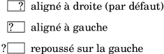

| [ << Nouveautés en matière de notation spécialisée ] | [Top][Contents] | [ >> ] |
| [ < Améliorations pour les musiques du monde ] | [ Up: Top ] | [ > ] |
Autres améliorations diverses
- La commande
\tempoaccepte désormais des valeurs rationnelles exactes. Le formateur par défaut arrondi au quart le plus proche ; la propriété de contextetempoCountPrecisionpermet de le contrôler.\fixed c' { \once \set Timing.tempoCountPrecision = #1/1000000 \tempo 4 = #200/3 g4 e2 f4 }
![[image of music]](../ea/lily-774bcc32.png)
- La nouvelle fonction Scheme
ly:parser-define-once!définit une variable qui ne l’aurait pas déjà été. - La propriété de contexte
timeSignatureFractionest déclarée obsolète, au profit detimeSignature. La nouvelle propriété accepte des métriques subdivisées ou alternatives, en plus des simples fractions jusqu’à présent prises en charge. Accéder à l’ancienne propriété résultera pour la nouvelle en une simple fraction et déclenchera un avertissement. -
(make-music 'Music)et(make-music 'Event)créent désormais des expressions musicales dont la propriétévoidest définie par défaut à#t. La fonctionempty-musica été supprimée au profit de(make-music 'Music). Le nouveau prédicatunspecified-music?reconnaît toute expression musicale affublée d’unvoid. - La nouvelle fonction Scheme
ly:number->durationconvertit une durée exprimée en unité relative de ronde enly:duration. Le log, le nombre de points et le facteur d’échelonnement sont déterminés automatiquement. - Les commandes de markup
\hspaceet\vspacepermettent d’insérer de l’espace, qui peut être négatif. Les autres objets sont déplacées en conséquence. Ce déplacement peut s’indiquer par une flèche qui s’imprimera à l’aide de la nouvelle commandeannotate-moving. Il est à noter que ces flèches ne reflètent pas l’étendue réelle des objets créés par\vspaceet\hspace; on pourrait utiliser\boxà cette fin.\markup { left \annotate-moving \hspace #4 right \column { top \annotate-moving \vspace #-4/3 bottom } }
![[image of music]](../dd/lily-c62f16fc.png)
- La nouvelle commande
\contextPropertyCheckvérifie qu’une propriété est définie à une valeur attendue ou n’est pas définie dans un contexte spécifique. - Un certain nombre de propriétés de contexte qui jusqu’à présent
reposaient sur
ly:momentprennent dorénavant des nombres rationnels. Afin de faciliter cette transition, chaque propriété numérique est appairée avec une propriété de secoursly:moment. L’utilisation d’une propriété de secours accède de manière transparente à la propriété numérique et déclenche un avertissement.Propriété de contexte obsolète Nouvelle propriété de contexte baseMomentbeatBasecompletionUnitAsMomentcompletionUnitgridIntervalAsMomentgridIntervalmeasureLengthAsMomentmeasureLengthminimumPageTurnLengthpageTurnMinimumRestLengthminimumRepeatLengthForPageTurnpageTurnMinimumRepeatLengthproportionalNotationDurationAsMomentproportionalNotationDurationtempoWholesPerMinuteAsMomenttempoWholesPerMinutetupletSpannerDurationAsMomenttupletSpannerDurationvoltaSpannerDurationAsMomentvoltaSpannerDuration -
\tempo dur = min - maxdéterminait la propriété de contextetempoWholesPerMinuteaprès arrondi à l’entier le plus proche. Ceci n’est plus le cas. Par voie de conséquence, le tempo MIDI peut être modifié dans certains cas. - Les fonctions Scheme
duration-lengthetly:duration-lengthont été respectivement renommées enly:duration->numberetly:duration->moment. - La nouvelle fonction Scheme
ly:parser-append-to-include-pathajoute son argument au chemin de recherche courant de l’analyseur. - La valeur de la propriété de contexte
timeSignatureSettingsutilise désormais le symbolebeatBaseen remplacement debaseMoment.convert-lyn’est pas en mesure de traiter ce changement. - L’inclusion d’images PNG est désormais possible à l’aide de la commande
de markup
\image. Ceci vient en supplément de la commande\epsfilepour les images EPS.La commande
\imagetraite aussi bien les images PNG que EPS, à ceci près que la commande\imageinsère un fond blanc, contrairement à\epsfile. - La nouvelle commande de markup
\qr-codepermet d’insérer un QR-code de la taille spécifiée pour l’URL correspondante. Ceci peut servir à fournir un lien vers le site du compositeur ou de l’éditeur, ou bien vers les sources LilyPond ou des enregistrements, etc.\markup \qr-code #10 "https://lilypond.org"
![[image of music]](../9d/lily-7878c139.png)
- Des parenthèses pour texte de markup ont été ajoutées aux fontes Emmentaler, pour s’harmoniser avec les nombres (contrairement à celles déjà disponibles pour les altérations).
- Ont été ajoutés à la fonte Emmentaler les glyphes figure-dash (U+2012), en-dash (U+2013) (quart de catradin) et slash (U+002F).
- Une espace pour nombres (U+2007), une espace fine (U+2009) et une espace ultrafine (U+200A) ont été ajoutées à la fonte Emmentaler.
- L’option
-dinclude-settingspeut désormais apparaître à plusieurs reprises, afin de pouvoir inclure différentes feuilles de style. - Dans l’utilisation conjointe de LaTeX et
lilypond-book, les images au fil du texte sont désormais décalées verticalement. Ce décalage peut se contrôler en ligne de commande à l’aide de l’option --inline-vshift et, localement, en ajoutantinlineen argument aux options de l’extrait. - Il est possible d’utiliser en ligne de commande les diverses options de
musicxml2lyen tant qu’options de la commandemusicxmlfiledelilypond-book. Bien que disponible depuis la version 2.15.9 publiée en 2011, ceci n’était jusqu’alors pas documenté. - Deux nouvelles options en ligne de commande font leur apparition :
-dfirst and -dlast. Elles sont équivalentes aux
réglages respectifs de
showFirstLengthetshowLastLengthdans un fichier LilyPond. Par exemple, taperlilypond -dlast=R1*5 ...
aura pour résultat que LilyPond générera seulement les cinq dernières mesure (partant du principe d’une métrique à 4/4).
- Est désormais disponible un nouveau manuel constituant un index de tous les objets graphiques (grobs) de LilyPond. Il est basé sur le travail de Joram Berger pour LilyPond 2.19.
- LilyPond prend en charge les annotations au fil du texte, autrement dit des sortes de notes de bas de page entre les systèmes. Bien que ce ne soit pas nouveau, puisque disponible depuis la version 2.15.17 publiée en 2011, cette possibilité n’était pas si stable et manquait de documentation jusqu’à présent.
- Le script
lilysonga été supprimé. En dehors du fait qu’il ne disposait d’aucune documentation, il n’était plus maintenu depuis fort longtemps. De plus, il reposait sur un programme externe de synthèse vocale –festival– laissé à l’abandon. - Deux nouveaux styles sont disponibles pour la propriété d’objet
graphique
space-alist:shrink-spaceetsemi-shrink-space. Ils contractent les espaces au lieu de les étendre. Ils sont aussi directement utilisés par LilyPond afin d’améliorer le formatage des portées resserrées. - Le binaire
lilyponddispose d’une nouvelle option en ligne de commande, -dstaff-size, pour régler la taille globale des portées. Elle est équivalente à la présence d’unset-global-staff-sizedans un fichier LilyPond. - En remplacement des fonctions
\bookOutputNameet\bookOutputSuffix, nous recommandons dorénavant l’utilisation des variables de papieroutput-filenameetoutput-suffix. Bien que les premières restent pleinement fonctionnelles, ces dernières sont plus cohérentes et facilement compréhensibles, notamment si elles sont combinées avec des variables de papier prédéfinies. - La propriété
Stem.details.lengthsaccepte maintenant des paires en tant qu’éléments de liste. Ceci permet de définir séparément les longueurs de hampe ascendante ou descendante. - La fonction
ly:self-alignment-interface::aligned-on-x-parent– utilisée par de nombreux objets graphiques pour calculer leur x-offset – écoute désormais la nouvelle propriétéX-alignment-extentdePaperColumn. Activée par défaut, elle fournit une largeur de secours au grobPaperColumndans le cas où il ne contiendrait pas de tête de note. Ceci permet d’aider à l’alignement des scripts de nuance attachés à des silences invisibles, entre autres.music = \new Staff << { f'2 g'2 } { s4\f s\f s\f s\f } >> \score { \music } \score { \music \layout { \context { \Score \override PaperColumn.X-alignment-extent = ##f } } }
![[image of music]](../0b/lily-56eaf92c.png)
- Les objets
BassFigureContinuationprennent désormais en charge lahorizontal-line-spanner-interface. La propriétépaddinga été remplacée par des sous-propriétés correspondantes dansbound-details. - La commande de markup
\align-on-otheraccepte désormais la valeur#fpour l’alignement, indiquant le point de référence d’un markup. - Une nouvelle fonction
\withRelativeDirest désormais disponible pour les commandes de markup qui incluent des fichiers lorsque ces fichiers devraient se trouver relativement au fichier source. Par exemple :\markup { \image #X #3 \withRelativeDir "test.png" } - Le positionnement des crochets horizontaux d’analyse a été amélioré.
En particulier, l’objet
HorizontalBracketa désormais une valeur deoutside-staff-priorityfixée à 800. Par conséquent, il se pourrait que des crochets imbriqués voient leur positionnement modifié. Ceci peut se corriger en ajustant les valeurs deoutside-staff-prioritypar un\tweak, tout en sachant que le crochet externe doit garder une valeur de priorité supérieure. - La nouvelle fonction Scheme
to-staff-spacepermet de convertir des dimensions absolues (exprimées en diverses unités) en unités d’espace de portée. Par exemple :top-markup-spacing.basic-distance = #(to-staff-space 2 'cm) % l'unité par défaut est le point (pt) \markup \override #`(baseline-skip . ,(to-staff-space 20)) \column { foo bar } - Les deux nouvelles fonctions de markup
\abs-hspaceet\abs-vspacepermettent de déterminer des dimensions absolues qui subsistent quelle que soit la taille de portée en cours. - Les données émises par l’option en ligne de commande -dshow-available-fonts sont désormais envoyées sur la sortie standard.
- La fonction
ly:font-config-display-fontsaccepte désormais un argument optionnel pour sélectionner le port de sortie. - La gestion des options Scheme en ligne de commande gagne en
robustesse. Quelques changements mineurs ont été rendus nécessaires par
cette nouvelle implémentation.
- − Sur la ligne de commande, l’argument à l’option -dpaper-size ne
nécessite plus d’être mis entre guillemets. En d’autres termes,
mentionner
-dpaper-size=a3est tout à fait valide. - − L’option pixmap-format requiert désormais une valeur sous forme
de chaîne, non plus un symbole. Rien ne change pour la ligne de
commande, mais un appel tel que
#(ly:set-option 'pixmap-format 'pngalpha)
devra être changé en
#(ly:set-option 'pixmap-format "pngalpha")
Il en va de même pour les options separate-page-formats et tall-page-formats. Notez que
convert-lyse charge d’effectuer la modification automatiquement.
- − Sur la ligne de commande, l’argument à l’option -dpaper-size ne
nécessite plus d’être mis entre guillemets. En d’autres termes,
mentionner
- La
side-position-interfacedispose de deux nouvelles propriétés,X-paddingetminimum-X-space, aux fins de contrôler le décalage horizontal et la distance minimale d’un grob avec son objet parent, indépendamment du décalage vertical et de la distance minimale. Ceci se révèle utile pour des objets tels queFingeringqui peuvent avoir un attachement à une tête de note tant dans la verticalité que l’horizontalité, et dont le décalage dans chacun des axes peut requérir des valeurs différentes. -
\pushContextPropertyet\popContextPropertysont deux nouvelles commandes permettant de manipuler les propriétés de contexte. La première insère la valeur courante dans une pile, alors que la seconde supprime cette valeur de la pile et restaure la valeur initiale.{ c' \pushContextProperty Staff.fontSize \set Staff.fontSize = 3 c' \pushContextProperty Staff.fontSize \set Staff.fontSize = 6 c' \popContextProperty Staff.fontSize c' \popContextProperty Staff.fontSize c' }
![[image of music]](../1d/lily-f312dbf7.png)
- La nouvelle propriété d’objet graphique
whiteout-colorpermet de définir la couleur de mise en surbrillance. Dans la même veine, la commande de markup\whiteoutattend une propriétécolorpour faire de même. - Le script
musicxml2lya été complètement remanié afin de mieux convertir les fichiers MusicXML en LilyPond. Il prend désormais en charge plus de fonctionnalités et éléments MusicXML et tente d’être plus fiable dans la conversion afin de respecter au mieux l’apparence originelle.Voici une liste des quelques changements notables, exception faite des corrections de bogue.
- − Le script est beaucoup plus rapide.
- − Le chevauchement et l’imbrication des liaisons fonctionnent comme on est en droit de s’y attendre.
- − Meilleure prise en charge automatique pour contrecarrer l’infâme ticket 34 de LilyPond (problème de synchronisation avec une appoggiature en début de pièce avec plusieurs portées).
- − Prise en charge des trémolos sur deux hampes et n-olets imbriqués.
- − Prise en charge de la couleur et de la taille de fonte pour la plupart des éléments MusicXML. Une nouvelle option en ligne de commande --dynamics-scale aide à compenser les différences de taille des glyphes de nuance pour diverses fontes musicales.
- − Prise en charge correcte des fins d’octaviation pour les fichiers
MusicXML créés par Finale. Le script vérifie l’élément
<software>pour déterminer le logiciel de notation utilisé. On peut y déroger si nécessaire à l’aide de l’option en ligne de commande --ottavas-end-early. - − L’option --shift-meter a été remplacée par l’option --shift-durations qui utilise une syntaxe plus simple.
- − La nouvelle option en ligne de commande --no-tagline supprime la génération de la tagline de LilyPond.
- − La nouvelle option en ligne de commande --book encapsule
la partition de premier niveau dans un
\book. - − Lorsque des éléments
<credit>sont présents, ils alimentent les champs du bloc\headerde LilyPond au lieu des métadonnées telles que<work-title>ou<creator>. - − La nouvelle option en ligne de commande --credit-page
spécifie la page où LilyPond devra récupérer les données
<credit>pour alimenter le bloc\header. - − Tous les éléments de métadonnée qui n’ont pas de correspondant
dans les champs standards de
\header(et qui ne sont pas ignorés comme le type « page number ») sont rendus dans des champs au nom plus cohérent : le préfixe ‘id: ’ est ajouté pour les éléments de<identification>, ‘credit: ’ pour les éléments de<credit>, et le nom de l’élément MusicXML (sans préfixe) dans tous les autres cas. Par conséquent, certains champs (non utilisés) prennent un nouveau nom.ancien nouveau movementnumbermovement-numberencodingsoftwareid: softwareencodingdateid: encoding-dateencoderid: encoderencodingdescriptionid: encoding-descriptionsourceid: source - − Les numéros de mesure insérés en commentaire dans le fichier LilyPond créé sont conformes, leur valeur indiquant la mesure précédente.
- La commande de markup
\page-refdispose d’une nouvelle propriétéx-aligndestinée à contrôler l’alignement horizontal de la jauge de remplacement.\markup { \box \page-ref #'foo "???" "?" " aligné à droite (par défaut)" } \markup { \box \override #`(x-align . ,LEFT) \page-ref #'foo "???" "?" " aligné à gauche" } \markup { \box \override #'(x-align . -2.5) \page-ref #'foo "???" "?" " repoussé sur la gauche" }

- La propriété
ledger-extrapeut désormais se régler aussi à partir de l’objetNoteHead.\score { { c'''1 \tweak ledger-extra #4 c'''1 c'''1 } }
![[image of music]](../27/lily-7851e4ac.png)
- Pour les objets graphiques
NonMusicalPaperColumn, la sous-propriétébottom-spacedeline-break-system-detailsa été renommée enbottom-padding. Alors qu’elle existait depuis la version 2.13.4 sortie en 2009, cette sous-propriété n’était pour l’instant pas documentée. - Il est désormais possible de modifier des regroupements de balises créés
par
\tagGroupou\tagGroupRef, à l’aide des commandes\resetTagGroups,\resetTagGroup,\addToTagGroupet\removeFromTagGroup. - La langue de saisie – telle que définie par
\language– est accessible au travers de la la nouvelle variable Schemeinput-language, en tant que symbole. - La nouvelle fonction
\breakAlignInsertfacilite la modification de l’ordre des éléments de notation tels que clefs, métriques, barres de mesure, etc. Jusqu’à présent, ceci demandait de redéfinir le vecteurScore.BreakAlignment.break-align-orders.{ g'1 \key f \major g' \breakAlignInsert staff-bar after key-signature \key g \minor g' }
![[image of music]](../67/lily-49b933a1.png)
- L’option de sortie -dcrop tient désormais compte de tous les stencils pour déterminer la boîte englobante. Ceci peut modifier la taille des sorties rognées.
- Les fonctions suivantes, qui étaient dépréciées depuis la version
2.13.19, ont été supprimées :
\deprecatedcresc,\deprecatedendcresc,\deprecateddimet\deprecatedenddim.
Pour des annonces plus anciennes, rendez-vouz aux pages https://lilypond.org/doc/v2.22/Documentation/changes/, ou remontez à l’index de la documentation.
| [ << Nouveautés en matière de notation spécialisée ] | [Top][Contents] | [ >> ] |
| [ < Améliorations pour les musiques du monde ] | [ Up: Top ] | [ > ] |